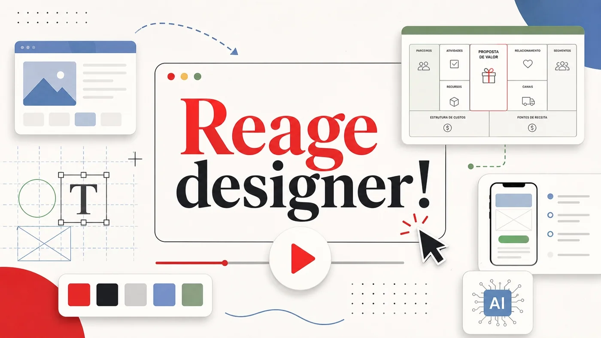

Referências
90 publicações
Chief of Design / David Arty - O design que vai sobreviver à IA
Disney+ Brasil - Futebol Europeu
Richard Jesus - Um framework para descobrir por que uma LP não converte
Chris Do / The Futur - Personal brand em 2026 sem virar commodity

Chris Do / The Futur - A habilidade invisível para ganhar clientes
Hyperplexed - My site will rank your best prompt injection
Zander Whitehurst - Take-home task de design virou trabalho grátis?
Chris Do / The Futur - personal branding em 2026
B9 - A internet era alugada
Página 4 de 9